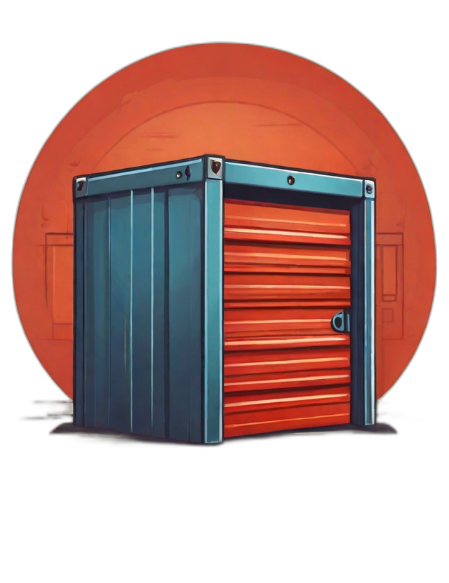
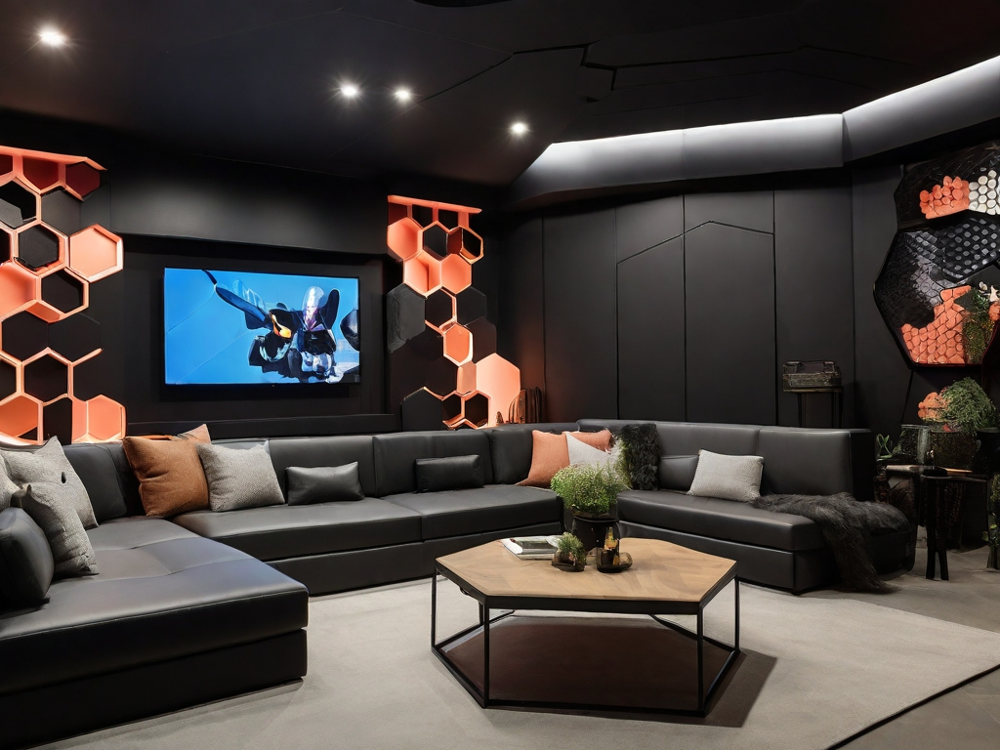
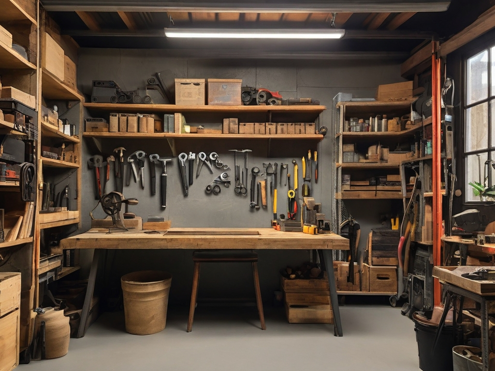

Proyecto UT06: Creación de Landing Page con elementos multimedia.
En este proyecto, trabajamos con elementos multimedia y los preparamos para su implementación.
1. Elementos multimedia
Tal y como pide el enunciado, esta página contiene:
-
Imágenes vectoriales en formato .svg:


-
Imágenes de mapa de bits:
  
Proceso de obtención de los elementos multimedia y derechos de propiedad
Las imágenes se han obtenido por los siguientes medios:
- Iconos: Iconship Interface Icons Collection y Dazzle Line Icons Collection, colecciones de iconos en formato svg disponibles en svgrepo.com. La página indica que ambas tienen una licencia CC Atribution, aunque puede cambiar según el icono svg.
- Logo e imágenes de mapa de bits: Creadas usando Leonardo.Ai. Los términos de servicio de Leonardo.Ai indican que todo tipo de datos de entrada y de salida generados por usuarios con un plan gratis son atribuidas una licencia de uso, copia, reproducción, procesado, adaptación, modificación, publicación, transmisión, creación de obras derivativas, muestra al público, sublicencia y distribución. En cuanto a aquellos datos de entrada y salida generados por usuarios con planes de pago (y/o en el caso de imágenes privadas), Leonardo.Ai retiene el derecho de usar la salida para ofrecer sus servicios al usuario.